13. Visualiser ses données avec matplotlib et seaborn#
Objectifs du chapitre
À la fin de ce chapitre, vous saurez :
choisir un type de graphique adapté à la question posée ;
tracer des courbes, nuages de points, histogrammes et diagrammes en barres avec
matplotlib;soigner un graphique (titre, axes, légende) et l’enregistrer dans un fichier ;
produire rapidement des graphiques statistiques à partir d’un
DataFrameavecseaborn.
Prérequis : chapitres 11 et 12. Durée indicative : 2h.
Un graphique bien choisi permet de comprendre en un coup d’œil ce que des tableaux de chiffres cachent : la forme d’une distribution, une différence entre groupes, une tendance, une valeur aberrante…
En Python, la bibliothèque de base pour tracer des graphiques est matplotlib. La bibliothèque seaborn, construite sur matplotlib, est spécialisée dans les graphiques statistiques et s’utilise très simplement avec des DataFrame.
Installation
matplotlib et seaborn sont inclus dans Anaconda et dans Google Colab. Sinon : pip install matplotlib seaborn.
import pandas as pd
import matplotlib.pyplot as plt
import seaborn as sns
df = pd.read_csv("donnees/penguins.csv")
vols = pd.read_csv("donnees/flights.csv")
Par convention, on importe le module matplotlib.pyplot sous le nom plt et seaborn sous le nom sns.
13.1. Quel graphique pour quelle question ?#
Avant de tracer un graphique, demandez-vous quelle question il doit éclairer. Le type de graphique en découle, selon la nature des variables (numériques ou qualitatives) :

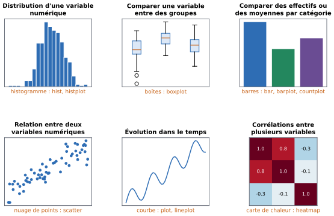
Fig. 13.1 Les principaux types de graphiques et la question à laquelle chacun répond (en orange, les fonctions matplotlib / seaborn correspondantes).#
13.2. Les bases de matplotlib#
13.2.1. Un premier graphique#
Traçons l’évolution du nombre de passagers aériens. La fonction plt.plot(x, y) trace une courbe reliant les points de coordonnées (x[i], y[i]) :
par_an = vols.groupby("year")["passengers"].sum()
plt.plot(par_an.index, par_an.values)
plt.show()
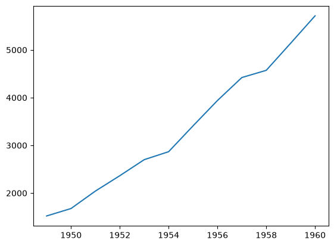
plt.show() affiche le graphique (dans un notebook, il s’affiche aussi automatiquement à la fin de la cellule).
13.2.2. Soigner son graphique#
Un graphique sans titre ni nom d’axes est difficile à lire. La façon recommandée de construire un graphique avec matplotlib consiste à créer une figure (fig) contenant un système d’axes (ax), puis à appeler les méthodes de ax pour tracer et annoter :
fig, ax = plt.subplots(figsize=(7, 4)) # largeur et hauteur en pouces
ax.plot(par_an.index, par_an.values, marker="o", label="passagers")
ax.set_title("Nombre de passagers par an")
ax.set_xlabel("Année")
ax.set_ylabel("Passagers (milliers)")
ax.legend()
ax.grid(alpha=0.3)
plt.show()
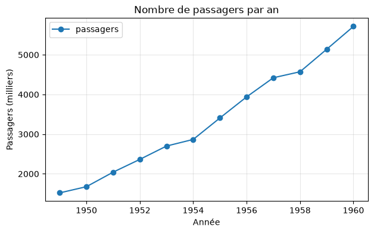

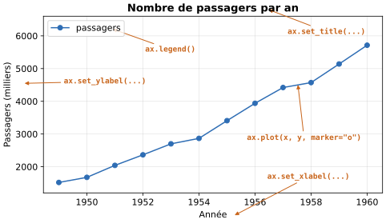
Fig. 13.2 Les éléments d’un graphique et les méthodes qui les définissent.#
À retenir
Un bon graphique a toujours un titre, des noms d’axes avec leurs unités, et une légende s’il contient plusieurs séries. Posez-vous la question : « quelqu’un qui n’a pas vu mon code comprendrait-il ce graphique ? »
13.2.3. Les principaux types de graphiques#
Voici les fonctions de base, à appeler sur un système d’axes ax :
Méthode |
Graphique |
Usage |
|---|---|---|
|
courbe |
évolution (dans le temps…) |
|
nuage de points |
relation entre deux variables numériques |
|
histogramme |
distribution d’une variable numérique |
|
diagramme en barres |
comparer des valeurs entre catégories |
|
boîtes à moustaches |
comparer des distributions |
fig, ax = plt.subplots(figsize=(6, 4))
ax.scatter(df["flipper_length_mm"], df["body_mass_g"], alpha=0.6)
ax.set_xlabel("Longueur de la nageoire (mm)")
ax.set_ylabel("Masse (g)")
ax.set_title("Masse et longueur de nageoire des manchots")
plt.show()
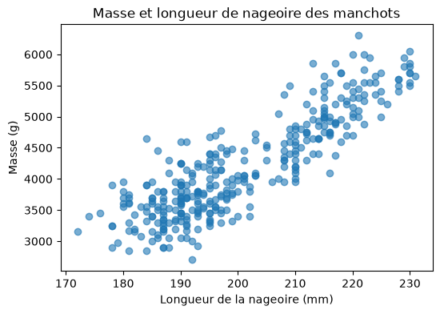
L’argument alpha (entre 0 et 1) rend les points semi-transparents, ce qui permet de voir les zones où ils se superposent.
fig, ax = plt.subplots(figsize=(6, 4))
ax.hist(df["body_mass_g"].dropna(), bins=25, color="tab:blue", edgecolor="white")
ax.set_xlabel("Masse (g)")
ax.set_ylabel("Nombre de manchots")
ax.set_title("Distribution des masses")
plt.show()
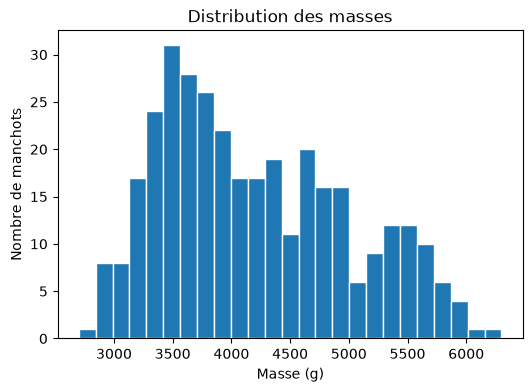
effectifs = df["species"].value_counts()
fig, ax = plt.subplots(figsize=(5, 3.5))
ax.bar(effectifs.index, effectifs.values, color=["tab:blue", "tab:green", "tab:purple"])
ax.set_ylabel("Nombre de manchots")
ax.set_title("Effectif par espèce")
plt.show()
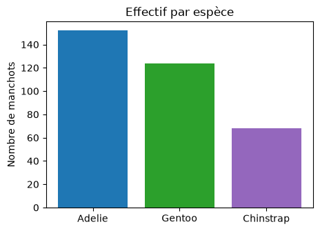
13.2.4. Plusieurs graphiques côte à côte#
plt.subplots(nb_lignes, nb_colonnes) crée une grille de systèmes d’axes ; axes est alors un tableau numpy, dont on sélectionne chaque élément avec des indices :
fig, axes = plt.subplots(1, 2, figsize=(10, 3.5))
axes[0].hist(df["bill_length_mm"].dropna(), bins=20)
axes[0].set_title("Longueur du bec (mm)")
axes[1].hist(df["bill_depth_mm"].dropna(), bins=20, color="tab:orange")
axes[1].set_title("Épaisseur du bec (mm)")
fig.tight_layout() # ajuste les espacements
plt.show()
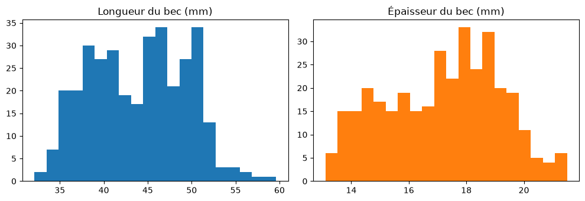
13.2.5. Enregistrer un graphique#
Pour enregistrer un graphique dans un fichier (pour l’insérer dans un rapport ou une présentation), on utilise fig.savefig avant plt.show() ; le format est déduit de l’extension :
fig.savefig("masses.png", dpi=150) # image (dpi = résolution)
fig.savefig("masses.pdf") # format vectoriel, idéal pour l'impression
13.2.6. Le raccourci de pandas#
Les Series et DataFrame disposent d’une méthode plot qui appelle matplotlib pour vous : pratique pour un coup d’œil rapide pendant l’exploration.
ax = par_an.plot(kind="bar", figsize=(7, 3.5), title="Passagers par an (milliers)")
plt.show()
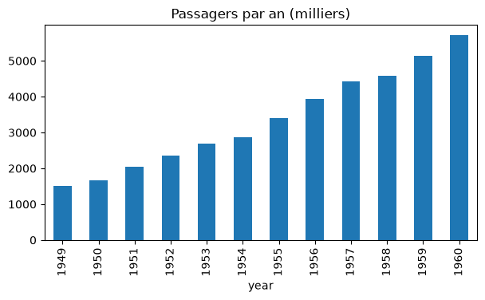
L’argument kind peut valoir "line" (par défaut), "bar", "barh", "hist", "box", "scatter"…
Testez-vous
Quel type de graphique utiliseriez-vous pour répondre à chacune de ces questions ?
Les mâles sont-ils plus lourds que les femelles ?
Comment le nombre de passagers évolue-t-il au cours d’une année ?
Quelle est la répartition des passagers du Titanic entre les trois classes ?
Les manchots qui ont un long bec ont-ils aussi une longue nageoire ?
Réponse
Des boîtes à moustaches (ou deux histogrammes superposés) de la masse, une par sexe : on compare des distributions.
Une courbe du nombre de passagers en fonction du mois : on regarde une évolution.
Un diagramme en barres des effectifs par classe : on compare des effectifs entre catégories.
Un nuage de points longueur du bec / longueur de la nageoire : relation entre deux variables numériques.
13.3. Des graphiques statistiques avec seaborn#
seaborn simplifie énormément la création de graphiques statistiques : on lui donne le DataFrame (argument data) et les noms des colonnes à représenter (x, y, et souvent hue pour colorer selon une catégorie).
Elle se charge de la légende, des couleurs, des noms d’axes, et des calculs statistiques (moyennes, intervalles de confiance, densités…).
sns.set_theme(style="whitegrid") # un style plus agréable pour tous les graphiques suivants
13.3.1. Distribution d’une variable : histplot#
sns.histplot(data=df, x="body_mass_g", hue="species")
plt.show()
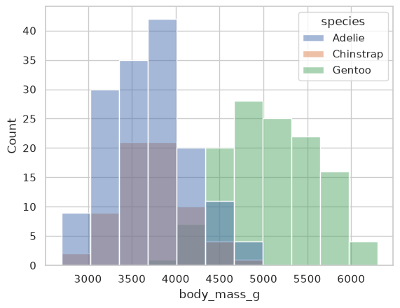
En une ligne, on obtient trois histogrammes superposés, un par espèce, avec la légende.
L’argument kde=True ajoute une estimation lisse de la densité, et multiple="stack" empile les histogrammes au lieu de les superposer.
13.3.2. Comparer des groupes : boxplot#
La boîte à moustaches résume une distribution : la boîte va du premier au troisième quartile (elle contient la moitié centrale des observations), le trait central est la médiane, et les points isolés sont des valeurs éloignées des autres.
sns.boxplot(data=df, x="species", y="body_mass_g", hue="sex")
plt.show()
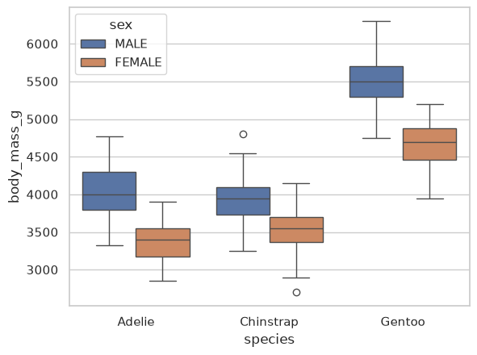
On voit immédiatement que les Gentoo sont plus lourds que les deux autres espèces, et que, dans chaque espèce, les mâles sont plus lourds que les femelles.
sns.violinplot, avec les mêmes arguments, donne une représentation plus détaillée de la forme des distributions.
13.3.3. Moyennes et effectifs : barplot et countplot#
fig, axes = plt.subplots(1, 2, figsize=(10, 3.5))
sns.countplot(data=df, x="island", hue="species", ax=axes[0])
axes[0].set_title("Effectifs par île et par espèce")
sns.barplot(data=df, x="species", y="flipper_length_mm", ax=axes[1])
axes[1].set_title("Longueur moyenne de la nageoire")
fig.tight_layout()
plt.show()
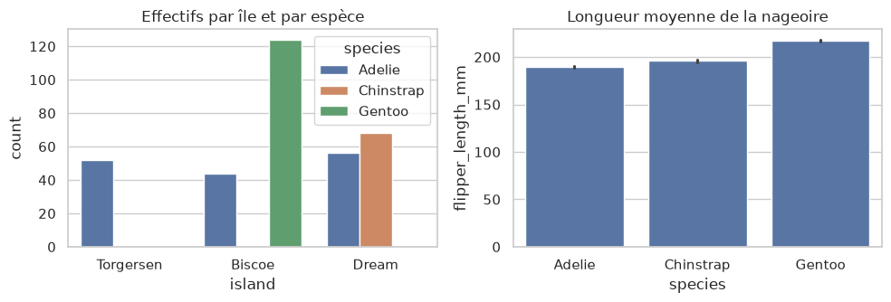
countplot compte les lignes de chaque catégorie ; barplot représente la moyenne de y pour chaque catégorie, avec un trait vertical qui indique l’incertitude sur cette moyenne (un intervalle de confiance à 95 %).
Remarquez l’argument ax=..., qui permet de placer un graphique seaborn dans un système d’axes créé avec plt.subplots.
13.3.4. Relation entre deux variables : scatterplot et regplot#
sns.scatterplot(data=df, x="bill_length_mm", y="bill_depth_mm", hue="species", style="species")
plt.show()
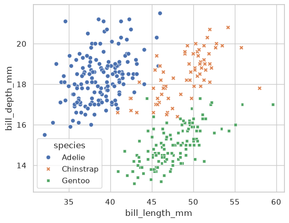
Ce graphique fait apparaître trois groupes bien distincts : la forme du bec permet presque de reconnaître l’espèce !
sns.regplot(data=..., x=..., y=...) ajoute au nuage de points une droite de régression.
13.3.5. Évolution : lineplot#
sns.lineplot(data=vols, x="month", y="passengers", hue="year", palette="viridis")
plt.xticks(rotation=45)
plt.show()
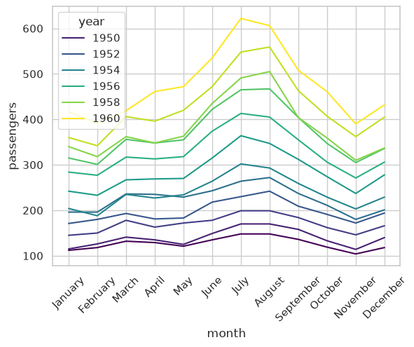
On distingue à la fois la tendance (chaque année, la courbe est plus haute que la précédente) et la saisonnalité (un pic de trafic chaque été).
13.3.6. Corrélations : heatmap#
La matrice des corrélations mesure, pour chaque paire de variables numériques, la force de leur lien linéaire (entre -1 et 1). Une carte de chaleur la rend lisible :
correlations = df.select_dtypes("number").corr()
sns.heatmap(correlations, annot=True, fmt=".2f", cmap="RdBu_r", vmin=-1, vmax=1)
plt.show()
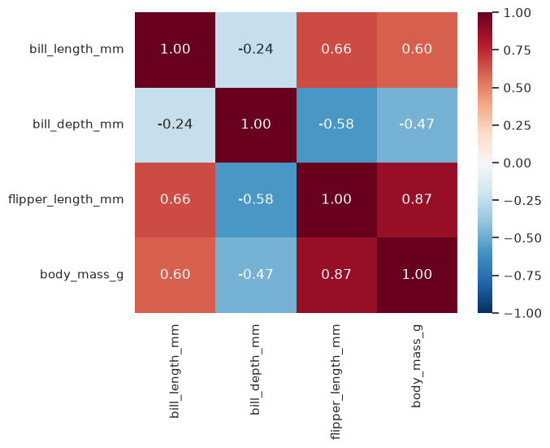
La masse est fortement corrélée à la longueur de la nageoire (0,87) : les manchots aux longues nageoires sont en général plus lourds.
13.3.7. Vue d’ensemble : pairplot#
Enfin, pairplot trace d’un coup les nuages de points de toutes les paires de variables numériques, et la distribution de chacune sur la diagonale. C’est un excellent point de départ pour explorer un jeu de données :
sns.pairplot(data=df, hue="species", height=1.8)
plt.show()
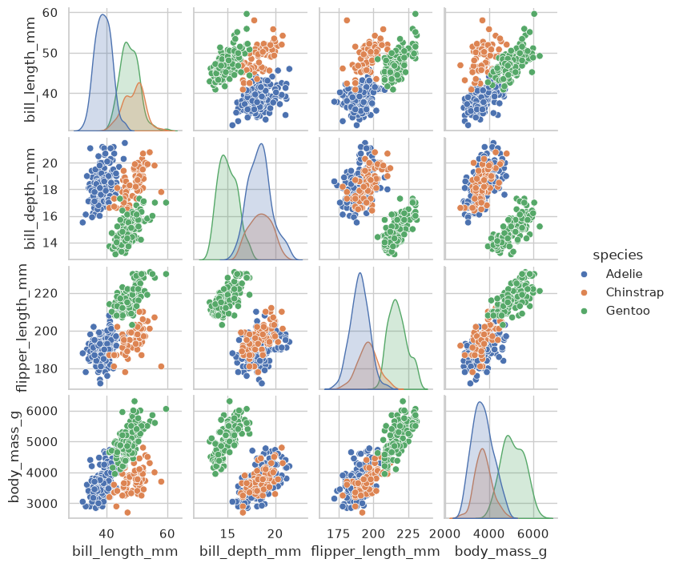
Si vous venez de R ou de SAS
La logique de
seabornest proche de celle deggplot2: on donne un tableau de données (data=df) et on associe des colonnes à des rôles visuels (x=,y=,hue=pour la couleur,style=pour la forme), comme avecaes(x, y, colour = ...).Pour les « facettes » (
facet_wrapen R), utilisez les fonctions de niveau figure deseaborn, commesns.relplot,sns.displotousns.catplot, avec les argumentscol=etrow=: par exemplesns.displot(data=df, x="body_mass_g", col="species").Si vous tenez à la grammaire de
ggplot2, le paquet Pythonplotninela reproduit presque à l’identique (ggplot(df, aes("x", "y")) + geom_point()).En SAS,
PROC SGPLOT(HISTOGRAM,VBOX,SCATTER,SERIES,VBAR) correspond aux fonctionshistplot,boxplot,scatterplot,lineplotetbarplot.
Personnaliser un graphique seaborn
Les fonctions seaborn comme histplot, boxplot ou scatterplot renvoient un système d’axes matplotlib : on peut donc le personnaliser avec les méthodes vues plus haut.
ax = sns.boxplot(data=df, x="species", y="body_mass_g")
ax.set_title("Masse selon l'espèce")
ax.set_xlabel("Espèce")
ax.set_ylabel("Masse (g)")
Erreurs fréquentes de ce chapitre
Symptôme / message |
Cause probable |
|---|---|
|
le nom de colonne passé à |
Le fichier enregistré est vide (tout blanc) |
|
Plusieurs graphiques se superposent dans la même figure |
dans un script, il manque |
|
|
Les étiquettes de l’axe des x se chevauchent |
ajouter |
13.4. Exercices#
Rappel
Ces exercices sont à faire dans un notebook, avec pandas, matplotlib.pyplot (plt) et seaborn (sns) importés.
Exercice 13.1 : Courbe soignée ★
Avec matplotlib, tracez l’évolution mensuelle du nombre de passagers (donnees/flights.csv) sur toute la période, en utilisant une colonne de dates (voir le chapitre 12). Ajoutez un titre et des noms d’axes, puis enregistrez le graphique dans un fichier passagers.png.
Solution
import pandas as pd
import matplotlib.pyplot as plt
vols = pd.read_csv("donnees/flights.csv")
vols["date"] = pd.to_datetime(vols["year"].astype(str) + "-" + vols["month"], format="%Y-%B")
fig, ax = plt.subplots(figsize=(9, 4))
ax.plot(vols["date"], vols["passengers"])
ax.set_title("Passagers mensuels, 1949-1960")
ax.set_xlabel("Date")
ax.set_ylabel("Passagers (milliers)")
fig.savefig("passagers.png", dpi=150)
plt.show()
Exercice 13.2 : Explorer les manchots ★
Avec seaborn :
tracez l’histogramme de la longueur des nageoires, coloré par espèce ;
tracez des boîtes à moustaches de la longueur du bec selon l’île ;
tracez le nuage de points de la masse en fonction de la longueur de la nageoire, coloré par sexe.
Pour chaque graphique, écrivez en une phrase ce que vous en concluez.
Solution
import pandas as pd
import matplotlib.pyplot as plt
import seaborn as sns
df = pd.read_csv("donnees/penguins.csv")
sns.histplot(data=df, x="flipper_length_mm", hue="species")
plt.show()
# Les Gentoo ont des nageoires nettement plus longues que les deux autres espèces.
sns.boxplot(data=df, x="island", y="bill_length_mm")
plt.show()
# Les becs sont plus courts en moyenne sur Torgersen, où ne vivent que des Adélie.
sns.scatterplot(data=df, x="flipper_length_mm", y="body_mass_g", hue="sex")
plt.show()
# Plus la nageoire est longue, plus le manchot est lourd ; à nageoire égale, les mâles sont un peu plus lourds.
Exercice 13.3 : Survie sur le Titanic ★★
Avec le fichier donnees/titanic.csv, produisez une figure contenant deux graphiques côte à côte :
à gauche, le taux de survie selon la classe, avec une barre par sexe (
sns.barplotavechue) ;à droite, la distribution des âges des survivants et des non-survivants (
sns.histplotavechue="survived").
Donnez un titre à chaque graphique et des noms d’axes en français.
Indice
Le taux de survie est la moyenne de la colonne survived : c’est exactement ce que représente sns.barplot(data=titanic, x="class", y="survived", hue="sex").
Pour placer les deux graphiques côte à côte, créez fig, axes = plt.subplots(1, 2, figsize=(11, 4)) et passez ax=axes[0] et ax=axes[1].
Solution
import pandas as pd
import matplotlib.pyplot as plt
import seaborn as sns
titanic = pd.read_csv("donnees/titanic.csv")
fig, axes = plt.subplots(1, 2, figsize=(11, 4))
sns.barplot(data=titanic, x="class", y="survived", hue="sex", ax=axes[0])
axes[0].set_title("Taux de survie par classe et par sexe")
axes[0].set_xlabel("Classe")
axes[0].set_ylabel("Taux de survie")
sns.histplot(data=titanic, x="age", hue="survived", multiple="stack", bins=30, ax=axes[1])
axes[1].set_title("Âge des passagers selon leur survie")
axes[1].set_xlabel("Âge (années)")
axes[1].set_ylabel("Nombre de passagers")
fig.tight_layout()
plt.show()
Exercice 13.4 : Carte de chaleur de la saisonnalité ★★★
Avec donnees/flights.csv, construisez un tableau croisé avec les années en colonnes, les mois en lignes et le nombre de passagers dans les cases, puis représentez-le avec sns.heatmap.
Les mois doivent apparaître dans l’ordre du calendrier (et non par ordre alphabétique).
Indice
La méthode pivot d’un DataFrame réorganise un tableau : vols.pivot(index="month", columns="year", values="passengers").
Pour remettre les mois dans l’ordre, utilisez loc avec la liste des mois dans l’ordre voulu.
Solution
import pandas as pd
import matplotlib.pyplot as plt
import seaborn as sns
vols = pd.read_csv("donnees/flights.csv")
tableau = vols.pivot(index="month", columns="year", values="passengers")
ordre = ["January", "February", "March", "April", "May", "June", "July",
"August", "September", "October", "November", "December"]
tableau = tableau.loc[ordre]
fig, ax = plt.subplots(figsize=(10, 5))
sns.heatmap(tableau, cmap="viridis", ax=ax)
ax.set_title("Passagers mensuels (milliers)")
ax.set_xlabel("Année")
ax.set_ylabel("Mois")
plt.show()
La carte met en évidence à la fois la croissance d’année en année (de gauche à droite) et le pic estival (lignes de juillet et août).
13.5. Bilan du chapitre#
À retenir
Le type de graphique dépend de la question : distribution (histogramme, boîtes), comparaison de catégories (barres), relation (nuage de points), évolution (courbe), corrélations (carte de chaleur).
matplotlib:fig, ax = plt.subplots()puisax.plot,ax.scatter,ax.hist,ax.bar;ax.set_title,ax.set_xlabel,ax.set_ylabel,ax.legend();fig.savefig("f.png")puisplt.show().pandas:serie.plot(kind=...)pour un coup d’œil rapide.seaborn:sns.histplot,boxplot,barplot,countplot,scatterplot,lineplot,heatmap,pairplot, avecdata=df,x="col",y="col",hue="col";ax=...pour placer le graphique.
Faites le point : êtes-vous capable de…
choisir un type de graphique adapté à une question ?
tracer un graphique
matplotlibavec titre, noms d’axes et légende, et l’enregistrer ?comparer la distribution d’une variable entre plusieurs groupes avec
seaborn?représenter la relation entre deux variables, colorée selon une troisième ?
placer plusieurs graphiques côte à côte ?